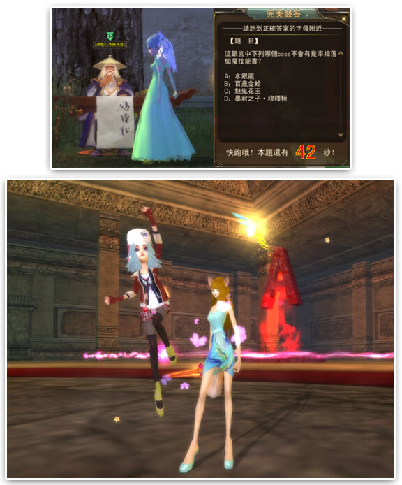
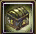

若想快速融入新世界，增進了解勢在必行。有族人獻策舉辦一次鴻學科考，題目內容涉及完美世界的原有內容，藉以快速了解完美世界。能否在鴻學科考中力拔頭籌，是時候展現真正的實力了。
活動時間：
2016年08月04日(四) ～ 2014年2016年08月31日(三)
各伺服器陸續開放
平日（週一、週三）：每天19:00開始
活動說明：
- 1.角色等級達到80級，修真到達渡劫的玩家可以在祖龍城傳送師附近經由鴻學科考接待官進入。
- 2.鴻學科考正式開始前世界通知玩家活動開啟，並接待前來參與科考的玩家入場。
- 3.鴻學科考接待官會在科考正式開始前兩分鐘離開，之後將無法進入考場，
活動開始時玩家會接到考題發放，在答題時間內，玩家需要移動到自己選擇的正確答案區域中。
當你通過自己的判斷回答對相應的問題會有豐厚獎勵。
- 4.答題時間很短暫你要抓緊啦！活動中途離開答題房間，將無法再進入。
- 5.答題結束後，玩家可以通過鴻學科考考官離開房間。

活動獎勵：
|
圖示
|
物品名稱
|
物品說明
|
|

|
學識之匣 |
綁定，右鍵打開，請保持有一個任務欄位 |
貼心小提醒：
1.進入考場之前，請確保有多餘的任務欄位，並留出至少四個背包空位，答題正確獎勵的學識之匣
各種物品，建議在活動結束後再統一使用，以免背包滿導致無法獲得獎勵。
2. 活動過程中如果攜帶任務離開考場，會導致答題任務無法完成，您只能手動放棄，並且在放棄的
同時會把您傳送回考場。
注意事項：
- 1.遊戲新幹線保留以上活動及獎項內容修改之權利。
- 2.若因遇不可抗力之因素，活動將有延後舉辦或取消的可能。
- 3.活動詳情，請以官網最新公告為主。
※頁面說明僅供玩家參考使用，一切設定請以遊戲內實際內容為主。